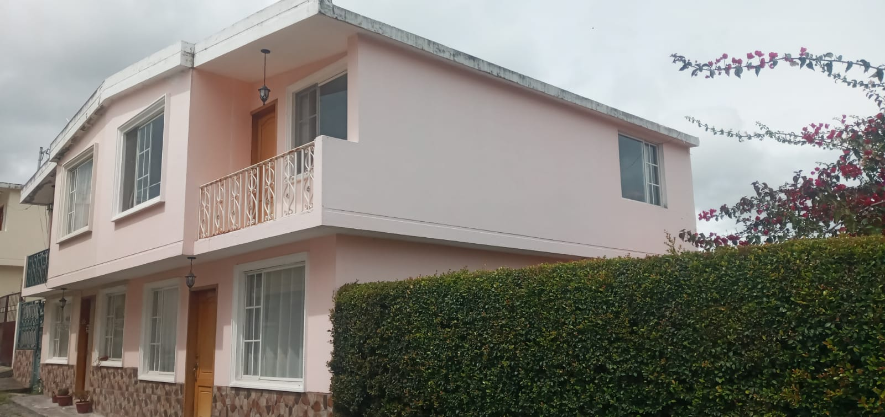
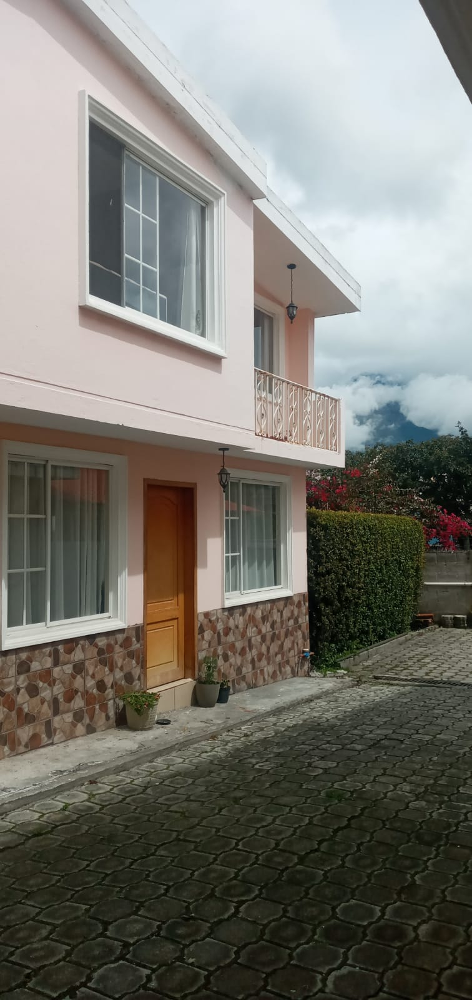
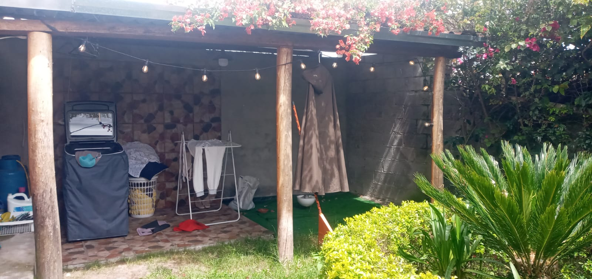

← volver al mapa
Casa - EC-RJ-155559
EC-RJ-155559 · casa · COTACACHI, Imbabura
★ Oferta destacada



Datos del remate
| Avalúo pericial | $42,316 |
| Tipo de bien | casa |
| Área de construcción | 81.56 m² |
| Cantón / Provincia | COTACACHI, Imbabura |
| Dirección / Sector | san jose |
| Señalamiento | Retasa de Bienes |
| Fecha de remate | 2026-10-01 |
| No. de proceso | 10333202200438 |
Análisis vs. mercado
| Avalúo por m² | $519/m² |
| Mediana de mercado en la zona | $541/m² |
| Descuento vs. mercado | 4.1% |
| Comparables usados | 90 |
| Radio de búsqueda | 2000 m |
| Puntaje | 47/100 |
Descripción completa del avalúo
bien inmueble que se encuentra dentro de un conjunto habitacional, la casa numero cuatro, esta conformada por dos pisos, adicional posee un jardin y sala exterior,lote de terreno número 4 que se encuentra ubicado en el sector de la parroquia el sagrario, cantón cotacachi, provincia de imbabura, comprendido dentro de los siguientes linderos y dimensiones: planta baja: área 81.56 m2, comprendido dentro de los siguientes linderos y dimensiones: norte: con 9.85 m con sra. dora gavilánez. sur: con 10.78m con calle interna “a”. este: con 8.20m con sra. rosario morales oeste: con 7.84m con lote n.03, bienes de uso exclusivo (bue4) vivienda 4 casa tipo 1 (planta baja) nivel n-2.48 norte: 6.50m con sra. dora gavilánez, sur: 6.50m con calle interna “a” , este: 7.84m con garaje 4 (bup4), oeste: 7.84m con vivienda 3 (bue3), área: 50.96 m2, casa tipo 1(planta alta) nivel n+0.22 norte: 6.90m con vacío sra. dora gavilanez, sur: 3.55m con vacío calle interna “a”. 3.55 m con vacío calle interna “a”. este: 8.44m con vacío garaje 4 (bue4). oeste: 7.84m con vivienda 3 (bue3) 0.60m con vacío calle interna “a”. área: 58.07 m2, área total: 109.03 m2, álicuota: 12.763, bienes de uso privativo (bup4) garaje bup 4 nivel n-2.68 norte: 3.35m con sra. dora gavilánez sur: 4.28m calle interna “a”. este: 8.20m con rosario morales, oeste: 7.84m con vivienda (bue4). área: 30.60m2, área de uso exclusivo p. baja+área uso privativo p. baja: 139.63m2.
Análisis de inversión (IA)
⚠ Dudosa — revisar bienLa propiedad en Cotacachi presenta un descuento marginal de apenas 4.1% sobre la mediana de mercado, lo que no justifica por sí solo el riesgo de un remate judicial. Sin embargo, la descripción revela que el área total real (incluyendo garaje y área privativa) supera los 139 m², mientras que el avalúo pericial se ancla en 81.56 m² de construcción, lo que genera una inconsistencia importante que debe verificarse antes de comprometer cualquier recurso. Vale la pena investigar más solo si el precio de adjudicación resultante queda significativamente por debajo del avalúo.
A favor:
- Casa de dos pisos con jardín y sala exterior, lo que sugiere un bien con comodidades adicionales para la zona.
- Ubicada dentro de un conjunto habitacional con nomenclatura clara de linderos, lo que indica cierto nivel de formalización urbanística.
- 90 comparables de mercado usados para el cálculo de descuento dan robustez estadística a la mediana de referencia.
- El área total real (planta baja + planta alta + garaje) ronda los 139.63 m², considerablemente mayor que los 81.56 m² reportados en el avalúo, lo que podría representar valor no capturado en el precio base.
- Incluye garaje privativo (BUP4) de 30.60 m², activo relevante en conjuntos habitacionales.
En contra:
- El descuento de 4.1% sobre la mediana de mercado es prácticamente insignificante para asumir los costos y riesgos propios de un remate judicial.
- El avalúo pericial de $42,316.33 parece subestimado o calculado sobre una superficie parcial (81.56 m²), cuando el área total descrita supera los 139 m², lo que genera desconfianza sobre la tasación oficial.
- Cotacachi es un mercado inmobiliario de liquidez limitada, lo que puede dificultar una eventual reventa o arriendo.
- La alícuota del 12.763% dentro del conjunto habitacional implica costos de mantenimiento y expensas comunes que deben proyectarse.
Riesgos a verificar:
- Discrepancia significativa entre el área de construcción del avalúo (81.56 m²) y el área total descrita en la escritura (139.63 m²): podría indicar un avalúo incompleto, áreas no legalizadas o un error que afecte el título.
- Al ser un conjunto habitacional con régimen de propiedad horizontal, es indispensable verificar que el reglamento de copropiedad esté inscrito en el Registro de la Propiedad y que la alícuota declarada sea correcta.
- No se menciona el estado actual de ocupación de la vivienda: si está ocupada por el deudor o un tercero, el lanzamiento puede tardar meses y generar costos legales adicionales.
- Sin información sobre gravámenes adicionales (hipotecas de segundo grado, embargos, deudas de expensas al conjunto): verificar en el Registro de la Propiedad de Cotacachi es indispensable.
- No se especifica la antigüedad de la construcción ni su estado de mantenimiento; la descripción no permite evaluar si requiere inversión inmediata en reparaciones.
- El nivel de implantación indicado (N-2.48 y N-2.68) sugiere que parte de la vivienda y el garaje están bajo el nivel de calle, lo que puede implicar riesgos de humedad o drenaje que deben verificarse en inspección física.
- Ausencia de información sobre servicios básicos formalizados (agua, luz, alcantarillado) y permisos municipales de habitabilidad.
Generado por IA a partir de la descripción — no es asesoría legal ni financiera.
Esta ficha es una copia de lo publicado en el sitio oficial de remates
judiciales de la Función Judicial del Ecuador, para consulta — no
reemplaza el expediente judicial. remates.funcionjudicial.gob.ec no da
un link propio por remate, por eso se generó esta página aparte.
Antes de ofertar, el expediente debe revisarlo un abogado.